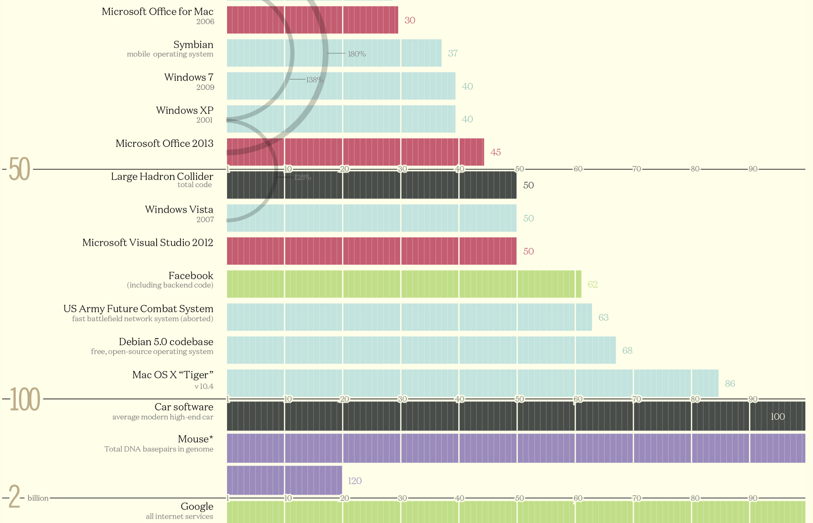
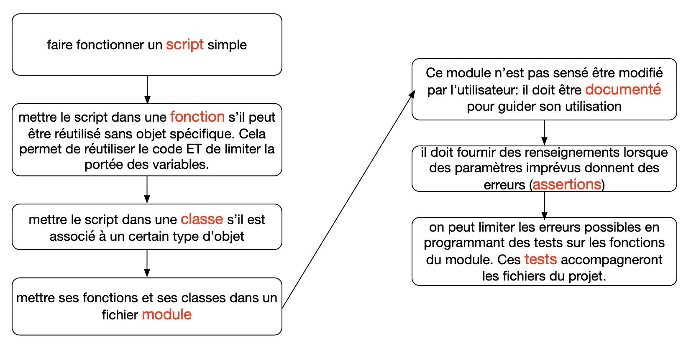

mise au point
Ce chapitre comprend 2 pages de cours et une page exercices:
Programmer en Grand
L’infographie ci-contre montre une mesure des lignes de code dans certains programmes conséquents. Les mesures sont en millions de ligne de code:

codebase - millions lines of code visualized
On peut ajouter qu’il y a omniprésence de programmes longs dans des systèmes critiques : finance, transports, économie, santé… La moindre erreur peut coûter « cher » : on aimerait qu’un programme s’exécute correctement dans toutes les situations…
Maintenir le code, travailler en équipe demande également une certaine méthodologie.
Pour programmer en grand, c’est à dire programmer avec plusieurs fichiers, il faudra adopter les bonnes pratiques, c’est à dire:
- documenter ses fonctions
- procéder par étapes, en ajoutant des tests structurels pour aider au developpement
- utiliser des modules pour ses fonctions et classes
- tester ses fonctions, vérifier qu’elles fonctionnent correctement.

du script aux tests unitaires, une démarche de projet
En Python, pour créer une cohérence dans le code, il est recommandé d’utiliser un guide de style. Il s’agit de PEP8, présenté par exemple sur python.sdv.univ-paris-diderot.
Spécification d’un algorithme ou d’une fonction
Spécifier un algorithme signifie qu’on le décrit avec précision. On spécifie chacun des composants, structures de données et fonctions.
- La documentation peut-être en consultation dans un document externe au programme (un fichier
readme.md, une page surwikipedia, …). Cette documentation peut alors fournir un pseudo-code, c’est à dire une série d’instruction avec des conventions de langages empruntées aux principaux langages existants, sans toutefois être rédigée dans un langage particulier. - Mais cela peut-être réalisé aussi au sein même du code du programme ou de la fonction. On y ajoute alors des informations facultatives lors de la déclaration de la fonction ou dans le docstring.
De manière générale, la spécification va comprendre :
- Le nom donné à cet algorithme. Ce nom doit être explicite, en rapport avec la tâche effectuée par l’algorithme
- Une description du résultat de cet algorithme, ainsi que la manière avec laquelle on va s’y prendre
- Le type et la nature des données en entrée
- Le type et la nature des données en sortie
- eventuellement, le type et la nature des variables internes.
Documentation externe à l’aide d’un pseudo-code
Le pseudo langage adopté est celui utilisé dans wikipedia : exemple
Exemple de pseudo langage: recherche_du_maximum
Nous allons adapter cette spécification, prévue pour expliquer des algorithmes, à nos fonctions écrites en python.
Documentation interne
La spécification au sein même de la fonction se fait en 2 temps:
- lors de la déclaration
- juste après la déclaration, dans le prototype (docstring) de la fonction.
Dans la déclaration de la fonction (prototype)
Une fonction doit être déclarée avant son utilisation. Cette déclaration est le prototype de la fonction. Le prototype doit indiquer à l’utilisateur le nom de la fonction, le type de la valeur de retour et le type des paramètres.
Pour de nombreux langages, ce prototypage est explicite, et cela provoque une erreur de compilation si ce prototypage n’est pas correct.
Exemple de déclaration d’une fonction en langage ADA :
En pratique: en Python, ces déclarations sont facultatives, mais on pourra les ajouter dans la première ligne, de la manière suivante:
Remarquez la difference avec la déclaration minimale suivante, qui n’apporte pas d’information sur les types:
Docstring d’une fonction
En python, on pourra construire le docstring dans le commentaire, mis tout de suite après la déclaration de la fonction :
Pour accéder au contenu du docstring depuis le shell python, il faudra charger le fichier: > from fichier import *, puis utiliser help:
Pour sortir de la fenêtre de l’aide, appuyer sur la touche q.
On pourra consulter la page du site Lyceum pour plus d’informations.
Prévoir et gérer les erreurs
Gérer les erreurs: lire le Traceback
L’exécution d’un programme peut provoquer une erreur, une exception. Lorsque c’est le cas, l’exécution s’arrête immédiatement et l’interpréteur Python affiche une trace d’erreur.
Cette dernière fournit des informations quant au chemin d’exécution qui a mené jusqu’à l’erreur et sur la cause de cette dernière.
La console affiche Traceback, qui marque le début de la trace d’erreur.
On peut distinguer 3 types d’erreurs :
- erreur de syntaxe
- erreur d’execution
- erreur de logique
L’interpréteur Python affiche ce qu’on appelle la pile d’appels ou pile d’exécution. La pile d’appel permet d’obtenir la liste de toutes les fonctions pour remonter jusqu’à celle où l’erreur s’est produite.
Connaitre les messages d’exception
Les messages d’exception affichés par le Traceback.
| message | type erreur |
|---|---|
| SyntaxError | parenthèse, crochet ou guillemet mal fermé |
| IndentationError | mauvaise indentation |
| ZeroDivisionError | division par zero |
| NameError | nom de fonction ou de variable mal orthographié |
| IndexError | accès à une position en dehors d’une liste |
| AttributeError | accès à une méthode ou à un attribut inconnu. Exemple: ’list’ object has no attribute ‘appand’ |
| TypeError | types incompatibles pour l’opération demandée. Exemple: unsupported operand type(s) for ‘-’: ‘range’ and ‘int’ |
| ValueError | une valeur est inappropriée pour une certaine opération |
| KeyError | Une clé est utilisée pour accéder à un élément d’un dictionnaire dont elle ne fait pas partie |
Anticiper les erreurs: Les tests STRUCTURELS
les tests structurels, vont verifier le fonctionnement interne du programme. Leur rôle est par exemple de couvrir les différentes branches conditionnelles, les limites d’une boucle, les types de données possibles pour une opération, …
Ces tests vont aider à programmer en grand, car ils vont fournir des moyens de contrôle à différentes étapes. Ils vont aussi guider l’utilisateur de vos fonctions grâce aux messages d’erreurs et arrêts du programme.
Attention, il s’agit de trouver des erreurs, plutôt que de prouver que ça marche. C’est une validation expérimentale du programme.
On placera des pré-conditions et post-conditions autour de la fonction à tester. Ce sont des tests structurels, qui vont arrêter le programme et spécifier le type d’erreur, pour aider à debugger.
Assertions: assert
Les assertions sont les hypothèses avec vérification.
Le rajout provisoire d’assertions dans le script va permettre d’anticiper sur les erreurs possibles de logique.
Le mécanisme d’assertion est là pour empêcher des erreurs qui ne devraient pas se produire, en arrêtant prématurément le programme. C’est un mode de programmation défensif, dans lequel on vérifie les préconditions.
Méthode : assert <expression logique>, 'commentaire facultatif'
L’expression logique doit être egale à True pour que le programme se poursuive.
Exemple avec une erreur d’execution :
Lorsque l’on execute la fonction inverse avec zero comme argument, le programme s’arrête et renvoie le message suivant dans le Traceback:
Mais l’interêt réside surtout dans l’utilisation d’assertion pour prévenir une possible erreur logique:
On souhaite maintenant obtenir le même comportement (arrêt pour une valeur sortant de l’ensemble de définition d’une fonction) pour la fonction de conversion de degré Celsius en degré Kelvin. En effet, il n’y aurait aucun sens de convertir une température inférieure à la température correspondant au zéro absolu. (exemple issu de univ.lille)
Alors :
Déclencher des exceptions Raise
L’instruction raise permet au programmeur de déclencher une exception spécifique. Son utilisation diffère un peu de assert, car la condition qui déclenche l’arrêt du programme devra être ajoutée:
Exemple:
Puis:
Notez que le type d’erreur exprimé après l’instruction raise est librement choisie par le programmeur, mais elle doit exister dans le langage Python. (IndexError, SyntaxError, ValueError, …)
Gestion des exceptions: try-except
Le mécanisme try-except va combiner des pré-conditions et post-conditions.
On pourra consulter les compléments sur la gestion des exceptions:
Le mécanisme des exceptions permet au programme de « rattraper » les erreurs, de détecter qu’une erreur s’est produite et d’agir en conséquence afin que le programme ne s’arrête pas.
Afin de rattraper l’erreur, on insère le code susceptible de produire une erreur entre les mots clés try et except.
Méthode :
L’instruction try fonctionne comme ceci.
- Premièrement, la clause try (instruction(s) placée(s) entre les mots-clés try et except) est exécutée.
- Si aucune exception n’intervient, la clause except est sautée et l’exécution de l’instruction try est terminée.
- Si une exception intervient pendant l’exécution de la clause “try”, le reste de cette clause est sauté. Si son type correspond à un nom d’exception indiqué après le mot-clé except, la clause “except” correspondante est exécutée, puis l’exécution continue après l’instruction try.
Exemple 1:
Testez le vous-même: créez une liste d’entiers pour x. Et essayez (
try) de mettre dans une nouvelle liste les valeurs retournées parinverse, à moins (except) que la valeur de x soit nulle.
Exemple 2: Si on veut convertir un caractère en entier, cela génère une erreur de type ValueError:
On peut utiliser un mecanisme d’exception pour rattraper cette erreur possible:
Executons ce script:
Programmer des tests FONCTIONNELS
tests fonctionnels: ils verifient qu’un programme ou une partie du programme se comportent correctement, et se conforment à leur specification.
Fonctionnel: avec un Doctest
Le doctest est un module qui recherche dans le prototypage (docstring) de la fonction ce qui pourrait s’apparenter à des tests sur la fonction.
On écrit alors une simulation d’un essai directement dans le docstring, en écrivant de manière explicite les 3 chevrons. Ainsi que la valeur attendue pour des arguments choisis. (voir le paragraphe précédent)
Comme par exemple:
Cette information sera placée dans le docstring de la fonction, et servira à anticiper des erreurs commises lors de la programmation.
Pour déclencher les tests sur la fonction, on ajoutera alors à la suite du script les lignes suivantes:
Supposons que l’on ait fait une erreur dans la fonction a_rect sur la valeur calculée, et que l’on ait écrit:
Exemple complet:
Lorsque l’on execute le fichier, la console affichera:
Documentation officielle :Lien
Fonctionnel: avec un module de test unitaires: unittest
Définition: Un test unitaire est un test réalisé sur une portion du programme, typiquement sur une fonction.
Le module unittest offre des outils de test de code, comme la classe TestCase. Le but est de vérifier que votre code génère des résultats corrects, conformes au attentes.
Exemple
Explications
On commence par importer le module unittest.
Les noms des classes de test se terminent généralement par TestCase (scenario de test). La classe créée pour le test, MyTest doit être une classe enfant de unittest.TestCase, d’où l’instruction class MyTest(unittest.TestCase):
Chaque test à créer est une méthode. Toute méthode dont le nom commence par test_ est exécutée lors du test. La méthode test_add appelle donc la fonction add avec les arguments 3 et 4, puis vérifie que son résultat est conforme, grâce à un test d’assertion assertEqual.
Ici, le test reussit:
En console:
On ajoute maintenant un deuxième test:
Le deuxième test échoue. On peut remonter jusqu’à l’erreur dans le Traceback qui est affiché en console:
Le module unittest fournit d’autres fonctions comme par exemple assertRaises. La liste complète est ici
Console: Test reussi
Explications
La fonction split prend en argument un caractère et decoupe la chaine de caractères au niveau de ce caractère. (et retourne une liste).
Par exemple:
L’argument DOIT être un caractère et non un nombre entier ou autre type. Sinon, l’execution génère un TypeError:
Or, ici, on fait le test d’assertion suivant: on vérifie si lorsque l’on appelle la fonction s.split avec l’argument 1, cela génère un TypeError, ce qui est VRAI. Donc le test REUSSI!
Par contre, avec self.assertRaises(TypeError,s.split,' '), cela echoue…
Testez ces exemples
Ces exemples peuvent être testés dans l’éditeur en ligne Trinket.
Modifiez le programme deposé sur Trinket pour separer dans 2 fichiers: le fichier de test et le fichier contenant la fonction à tester.
Autres tests
En fait, unittest.TestCase propose plusieurs méthodes d’assertion que nous utiliserons dans nos tests unitaires.
| Méthode | Explications |
|---|---|
| assertEqual(a, b) | a == b |
| assertNotEqual(a, b) | a != b |
| assertTrue(x) | x is True |
| assertFalse(x) | x is False |
| assertIs(a, b) | a is b |
| assertIsNot(a, b) | a is not b |
| assertIsNone(x) | x is None |
| assertIsNotNone(x) | x is not None |
| assertIn(a, b) | a in b |
| assertNotIn(a, b) | a not in b |
| assertIsInstance(a, b) | isinstance(a, b) |
| assertNotIsInstance(a, b) | not isinstance(a, b) |
| assertRaises(exception, fonction, *args, **kwargs) | Vérifie que la fonction lève l’exception attendue. |
Exercice
On souhaite traiter un ensemble de données issues d’un capteur (robot). Les données sont mises dans 2 listes:
- une liste pour les positions:
x = [0, 1.0, 1.2, 1.4, ...] - une liste pour le temps:
t = [0.0, 0.0123, 0.0247, 0.0247, 0.0320, ...]
On cherche à définir la vitesse du robot au cours du temps dans une 3e liste. Les valeurs sont calculées à partir de la loi:
$$v[i] = \tfrac{x[i+1] - x[i]}{t[i+1]-t[i]}$$Les valeurs du temps peuvent générer des erreurs mathématiques (temps égaux pour $t_{i+1}$ et $t_i$).
Utiliser un mécanisme de prevention des erreurs et testez votre programme.
Suite
- Exercices: Lien
Sources
- python.developpez.com
- Pour aller plus loin sur la gestion des Exceptions : xavierdupre.fr les bases en python
- Documentation officielle : unittest